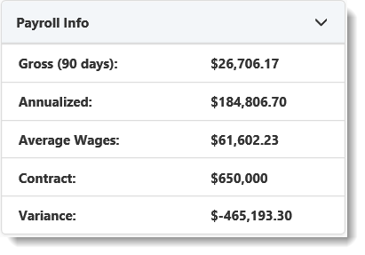

The Payroll Info widget is on the Workspace Landing Page when the Client Master Status is Client, Pending Termination, or Terminated. This widget provides insight into the variance of the proposed payroll from the Pricing Batch concerning actual payroll. Payroll numbers may appear skewed in specific scenarios where the client is seasonal or in cases where there are gaps in pay for employees.
| Widget Definition | |
|---|---|
|
Gross (90 days) |
The sum of Gross Payroll values from Payroll Statistics for the last 90 days based on the Pay Date. |
|
Annualized |
An annualization factor times the known Gross Payroll from Payroll Statistics. The annualization factor is calculated by taking the count of days between the oldest known Pay Date from Payroll Statistics and today’s date and dividing 360 by this count. If the workspace has Payroll dates older than 90 days, this defaults to 4. Because this is a calculated factor, annualization factors can be skewed if the workspace contains limited payroll records. For example, if the oldest PayDate in the workspace is from 6 days ago, the annualization factor is 60 (360/6). |
|
Average Wages |
The Annualized Payroll divided by a count of distinct Employees payed in the last 90 days. |
|
Contract |
The sum of Gross Payroll for each WC Code on the current activated Pricing Batch. If not, a client it would then use the Gross Payroll sum from the RFP Batch. |
|
Variance |
The difference between the Annualized Payroll and the Contract Payroll. |